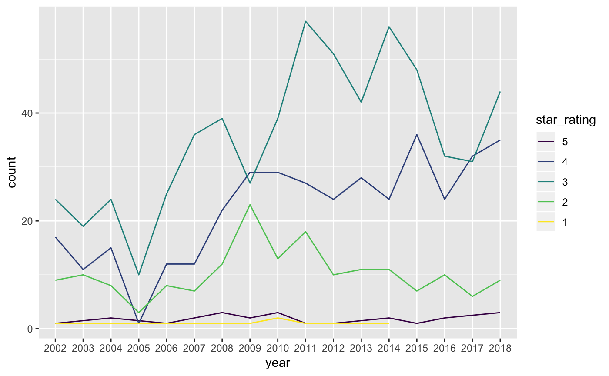
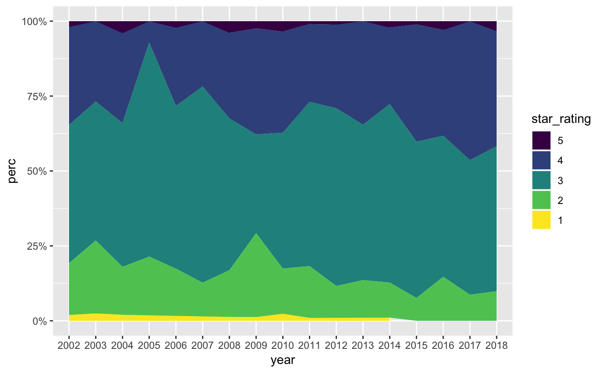
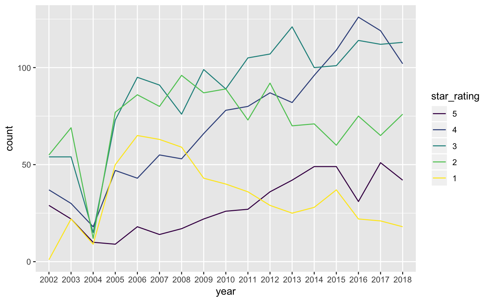
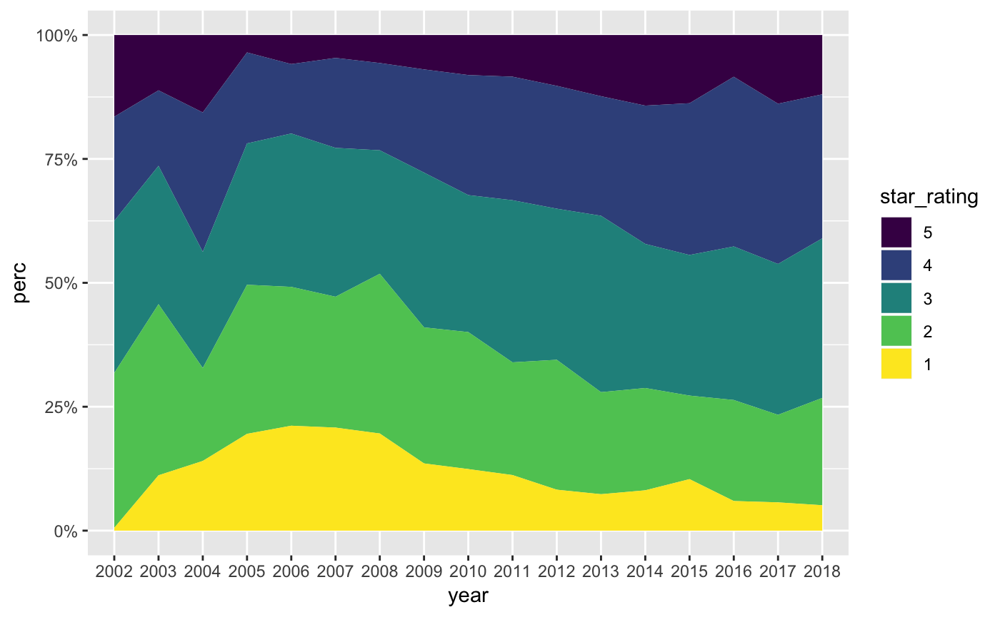
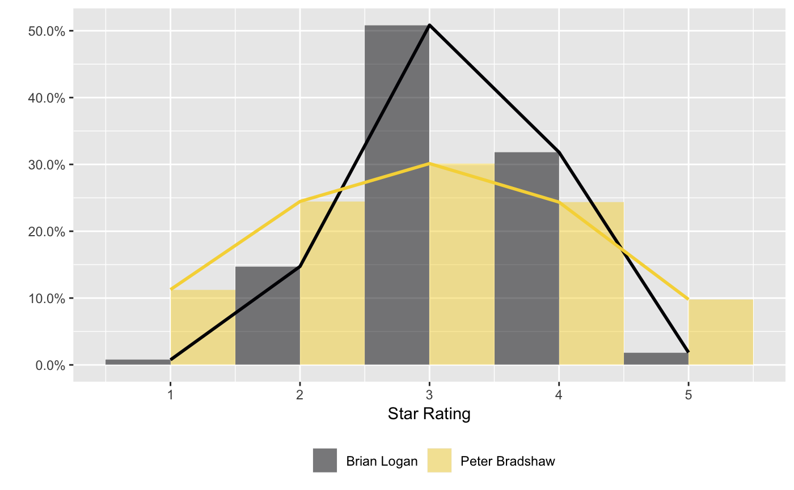

guardianapi
introduction.Rmdguardianapi contains functions to search and retrieve articles, tags and editions from the Guardian open data platform.
Let’s look at a few reviewers. For example, I noticed that comedy critic Brian Logan seemed to give out very few five star or one star reviews, so I wanted to see if that was true. I’ve included all his reviews from 2002–2018
library(guardianapi)
library(dplyr)
library(lubridate)
library(ggplot2)
logan_search <- gu_items(query = "profile/brianlogan")
logan_search$star_rating <- as.numeric(logan_search$star_rating)
logan_reviews <- logan_search %>%
filter(!is.na(star_rating),
web_publication_date >= as.Date("2002-01-01"),
web_publication_date <= as.Date("2018-12-31"))
logan_reviews$year <- as.factor(year(logan_reviews$web_publication_date))
logan_summary <- logan_reviews %>%
group_by(year, star_rating) %>%
summarise(count = n()) %>%
mutate(perc = count/sum(count)) %>%
ungroup() %>%
mutate(star_rating = factor(star_rating, levels = c(5,4,3,2,1)))
p_logan <- ggplot(data = logan_summary,
aes(x = year, y = count, group = star_rating)) +
geom_line(aes(colour = star_rating)) +
scale_colour_viridis_d()
p_logan
p_logan_area <- ggplot(data = logan_summary,
aes(x = year, y = perc, group = star_rating)) +
geom_area(aes(fill = star_rating)) +
scale_fill_viridis_d() +
scale_y_continuous(labels = scales::percent)
p_logan_area
As you can see here, Brian Logan is pretty stingy with five star reviews, and didn’t give out a single five star rating in all of 2017. Likewise, he hasn’t completed panned any act with a single star since 2014.
Now let’s take a look at film critic Peter Bradshaw. I’ve used the same time span, and I’ve removed the single 0-star rating given to the 2008 film Boat Trip. There are more than four times as many film reviews from Peter Bradshaw as there are comedy reviews from Brian Logan over the same time period.
library(dplyr)
library(lubridate)
library(ggplot2)
bradshaw_search <- gu_items(query = "profile/peterbradshaw")
bradshaw_search$star_rating <- as.numeric(bradshaw_search$star_rating)
bradshaw_reviews <- bradshaw_search %>%
filter(!is.na(star_rating), star_rating != 0,
web_publication_date >= as.Date("2002-01-01"),
web_publication_date <= as.Date("2018-12-31"))
bradshaw_reviews$year <- as.factor(year(bradshaw_reviews$web_publication_date))
bradshaw_summary <- bradshaw_reviews %>%
group_by(year, star_rating) %>%
summarise(count = n()) %>%
mutate(perc = count/sum(count)) %>%
ungroup() %>%
mutate(star_rating = factor(star_rating, levels = c(5,4,3,2,1)))
p_bradshaw <- ggplot(data = bradshaw_summary,
aes(x = year, y = count, group = star_rating)) +
geom_line(aes(colour = star_rating)) +
scale_colour_viridis_d()
p_bradshaw
p_bradshaw_area <- ggplot(data = bradshaw_summary,
aes(x = year, y = perc, group = star_rating)) +
geom_area(aes(fill = star_rating)) +
scale_fill_viridis_d() +
scale_y_continuous(labels = scales::percent)
p_bradshaw_area
We can compare the distributions of ratings given by the two critics.
bradshaw_reviews$byline <- "Peter Bradshaw"
logan_reviews$byline <- "Brian Logan"
comp_df <- bind_rows(logan_reviews, bradshaw_reviews) %>%
mutate(star_rating = as.numeric(star_rating))
comp_df2 <- comp_df %>%
group_by(star_rating, byline) %>%
summarise(count = n()) %>% group_by(byline) %>%
mutate(perc = count/sum(count))
comp_p <- ggplot(comp_df,
aes(x = star_rating, y = ..density.., fill = byline)) +
geom_histogram(position="dodge", bins = 5, alpha = 0.5) +
scale_y_continuous(labels = scales::percent) +
scale_fill_viridis_d(end = 0.9, option = "inferno") +
labs(x = "Star Rating", y = "", fill = "") +
theme(legend.position = "bottom") +
geom_line(aes(x = star_rating, y = perc,
colour = byline, group = byline), data = comp_df2,
size = 1) +
scale_colour_viridis_d(end = 0.9, option = "inferno") +
guides(colour = FALSE)
comp_p
We can also use gu_content() for more general queries. For example, here’s all the articles returned for “relationships” between the two given dates:
relations <- gu_content(query = "relationships", from_date = "2018-11-30",
to_date = "2018-12-30")
tibble::glimpse(relations)
#> Observations: 171
#> Variables: 43
#> $ id <chr> "music/2018/dec/02/the-1975-a-b…
#> $ type <chr> "article", "article", "article"…
#> $ section_id <chr> "music", "film", "lifeandstyle"…
#> $ section_name <chr> "Music", "Film", "Life and styl…
#> $ web_publication_date <dttm> 2018-12-02 08:10:28, 2018-12-1…
#> $ web_title <chr> "The 1975: A Brief Inquiry Into…
#> $ web_url <chr> "https://www.theguardian.com/mu…
#> $ api_url <chr> "https://content.guardianapis.c…
#> $ tags <list> [<data.frame[12 x 15]>, <data.…
#> $ is_hosted <lgl> FALSE, FALSE, FALSE, FALSE, FAL…
#> $ pillar_id <chr> "pillar/arts", "pillar/arts", "…
#> $ pillar_name <chr> "Arts", "Arts", "Lifestyle", "N…
#> $ headline <chr> "The 1975: A Brief Inquiry Into…
#> $ standfirst <chr> "(Dirty Hit)", "Model and actor…
#> $ trail_text <chr> "(Dirty Hit)", "Model and actor…
#> $ byline <chr> "Kitty Empire", "Andrew Pulver"…
#> $ main <chr> "<figure class=\"element elemen…
#> $ body <chr> "<p>As generational demarcators…
#> $ newspaper_page_number <chr> "33", NA, "7", "13", "56", NA, …
#> $ star_rating <chr> "4", NA, NA, NA, NA, NA, NA, NA…
#> $ wordcount <chr> "184", "280", "387", "1027", "1…
#> $ comment_close_date <dttm> 2018-12-23 12:03:00, NA, 2018-…
#> $ commentable <chr> "true", NA, "true", NA, "true",…
#> $ first_publication_date <dttm> 2018-12-02 08:10:28, 2018-12-1…
#> $ is_inappropriate_for_sponsorship <chr> "false", "false", "false", "fal…
#> $ is_premoderated <chr> "false", "false", "true", "fals…
#> $ last_modified <chr> "2018-12-02T08:10:28Z", "2018-1…
#> $ newspaper_edition_date <date> 2018-12-02, NA, 2018-12-10, 20…
#> $ production_office <chr> "UK", "UK", "UK", "UK", "UK", "…
#> $ publication <chr> "The Observer", "theguardian.co…
#> $ short_url <chr> "https://gu.com/p/a39vq", "http…
#> $ should_hide_adverts <chr> "false", "false", "false", "fal…
#> $ show_in_related_content <chr> "true", "true", "true", "true",…
#> $ thumbnail <chr> "https://media.guim.co.uk/1a6fe…
#> $ legally_sensitive <chr> "false", "false", "false", "fal…
#> $ lang <chr> "en", "en", "en", "en", "en", "…
#> $ body_text <chr> "As generational demarcators go…
#> $ char_count <chr> "1134", "1612", "2192", "6034",…
#> $ should_hide_reader_revenue <chr> "false", "false", "false", "fal…
#> $ show_affiliate_links <chr> "true", "false", "false", "fals…
#> $ sensitive <chr> NA, "true", "true", NA, NA, "tr…
#> $ display_hint <chr> NA, NA, NA, NA, NA, NA, NA, NA,…
#> $ live_blogging_now <chr> NA, NA, NA, NA, NA, NA, NA, NA,…Use the tag parameter to limit articles to particular sections:
relations_sex <- gu_content(query = "relationships", from_date = "2018-11-30",
to_date = "2018-12-30", tag = "lifeandstyle/sex")
#> Retrieving page 1
tibble::glimpse(relations_sex)
#> Observations: 5
#> Variables: 40
#> $ id <chr> "lifeandstyle/2018/dec/10/im-in…
#> $ type <chr> "article", "article", "article"…
#> $ section_id <chr> "lifeandstyle", "lifeandstyle",…
#> $ section_name <chr> "Life and style", "Life and sty…
#> $ web_publication_date <dttm> 2018-12-10 08:00:39, 2018-12-2…
#> $ web_title <chr> "I’m in a relationship with ano…
#> $ web_url <chr> "https://www.theguardian.com/li…
#> $ api_url <chr> "https://content.guardianapis.c…
#> $ tags <list> [<data.frame[10 x 13]>, <data.…
#> $ is_hosted <lgl> FALSE, FALSE, FALSE, FALSE, FAL…
#> $ pillar_id <chr> "pillar/lifestyle", "pillar/lif…
#> $ pillar_name <chr> "Lifestyle", "Lifestyle", "Life…
#> $ headline <chr> "I’m in a relationship with ano…
#> $ standfirst <chr> "We kiss and cuddle, but he won…
#> $ trail_text <chr> "We kiss and cuddle, but he won…
#> $ byline <chr> "Pamela Stephenson Connolly", "…
#> $ main <chr> "<figure class=\"element elemen…
#> $ body <chr> "<p><strong>Until last year, I …
#> $ newspaper_page_number <chr> "7", "66", "83", NA, "44"
#> $ wordcount <chr> "387", "307", "2189", "759", "1…
#> $ comment_close_date <dttm> 2018-12-13 08:00:39, 2018-12-2…
#> $ commentable <chr> "true", "true", "true", "false"…
#> $ first_publication_date <dttm> 2018-12-10 08:00:39, 2018-12-2…
#> $ is_inappropriate_for_sponsorship <chr> "false", "false", "false", "fal…
#> $ is_premoderated <chr> "true", "true", "true", "false"…
#> $ last_modified <chr> "2018-12-10T08:00:39Z", "2018-1…
#> $ newspaper_edition_date <date> 2018-12-10, 2018-12-22, 2018-1…
#> $ production_office <chr> "UK", "UK", "UK", "UK", "UK"
#> $ publication <chr> "The Guardian", "The Guardian",…
#> $ short_url <chr> "https://gu.com/p/a5fad", "http…
#> $ should_hide_adverts <chr> "false", "false", "false", "fal…
#> $ show_in_related_content <chr> "true", "true", "true", "true",…
#> $ thumbnail <chr> "https://media.guim.co.uk/35fd3…
#> $ legally_sensitive <chr> "false", "false", "false", "fal…
#> $ sensitive <chr> "true", NA, NA, NA, "true"
#> $ lang <chr> "en", "en", "en", "en", "en"
#> $ body_text <chr> "Until last year, I identified …
#> $ char_count <chr> "2192", "1729", "12190", "4404"…
#> $ should_hide_reader_revenue <chr> "false", "false", "false", "fal…
#> $ show_affiliate_links <chr> "false", "false", "false", "fal…